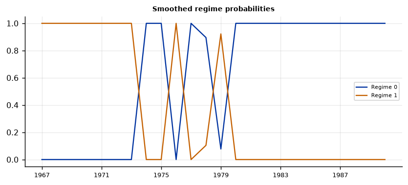
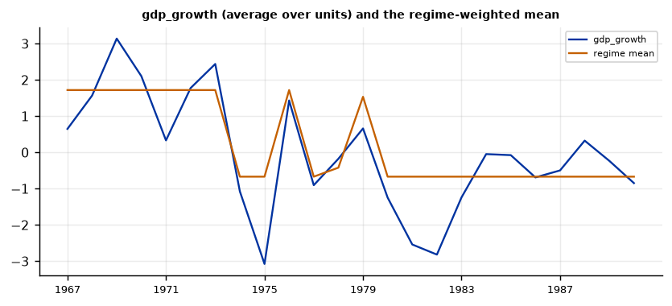
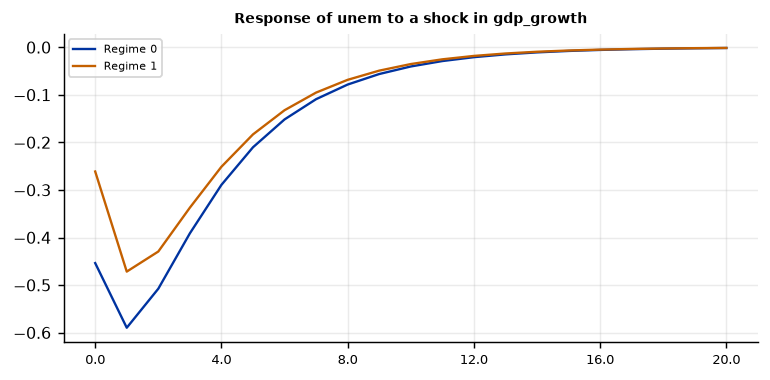
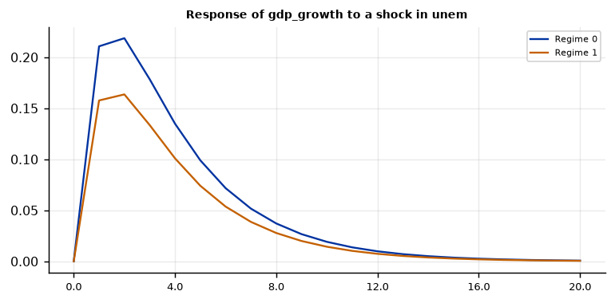

Run this model on your own data in Open Econometric Systems →
Step 1The question and the model
Did the OECD economies share a regime change in the 1970s? The panel Markov-switching VAR has the same form as the Markov-switching VAR for one economy, with one important restriction: one unobserved regime path is shared by all units, and the parameters are pooled across units,
where \(i\) indexes countries, \(t\) years and \(s_t\) is the regime in year \(t\) (the same for every country). The likelihood adds up the units' contributions given the regime, so all countries inform the regime probabilities. As in the single-economy model, you choose what switches: MSI (intercepts), MSIH (intercepts and covariance matrices) or MSIAH (also the autoregressive coefficients). By default the data are demeaned by country, so that country-specific levels do not create regimes.
Three checks before you trust a panel regime model
- Is the shared-regime assumption plausible? The model cannot find country-specific regimes. If countries had different cycles, the estimated regime is an average. Check that the dating survives dropping each country in turn (Step 8).
- Are the variables stationary? Persistent series such as unemployment can create regimes out of trends.
- How many regimes, and how many time periods? The regime path has only \(T\) points however many countries you have. Here \(T = 24\), so regimes of one or two years carry little information.
How to write it: the model
We estimate a panel Markov-switching VAR with one lag in GDP growth and the unemployment rate for 14 OECD countries, 1966–1990. A single regime path, a first-order Markov chain with two states, is shared by all countries: the regime in a given year is the same for every country. Intercepts and covariance matrices are regime-specific (MSIH), and the autoregressive coefficients are pooled and common to the regimes. The variables are demeaned by country. We estimate the model by maximum likelihood with the EM algorithm from several starting values and take standard errors from the numerical Hessian. We choose the number of regimes with AIC and BIC.
Step 2Load the data and test for unit roots
import numpy as np
import pandas as pd
import oes_engine as oes # pip install -e open-econometric-systems/oes-engine
data = open("garrett.csv").read()
df = pd.read_csv("garrett.csv")
print(df.groupby("country").size().describe().loc[["count", "min", "max"]])
print(df[["gdp_growth", "unem"]].describe().round(2).loc[["mean", "std", "min", "max"]])
spec = dict(vars=["gdp_growth", "unem"], unit="country", time="year", lags=1, regimes=2, switching="MSIH", horizon=20)
r = oes.run("mspvar", data, spec)
oes.show(r, "Unit-root")count 14.0
min 25.0
max 25.0
dtype: float64
gdp_growth unem
mean 3.25 4.99
std 2.43 3.24
min -4.30 0.68
max 12.80 13.00
Unit-root tests (cross-unit average of the series)
ADF level, constant: p ADF level, trend: p ADF first difference: p KPSS level: p Conclusion
Variable
gdp_growth 0.0573 0.0570 0.0758 0.0578 I(1) or I(2): borderline
unem 0.5018 0.7695 0.0245 0.0227 I(1)
Note: ADF H0: unit root; KPSS H0: stationary (p-values are truncated at 0.01 and 0.10). For a Minnesota-type prior use a prior mean of 1 on the own first lag for I(1) variables in levels (random walk) and 0 for stationary variables. A VAR in levels with a random-walk prior remains valid when the variables are I(1) or cointegrated (Sims, Stock and Watson 1990).How to read it
The panel is balanced: 14 countries with 25 years each (350 observations; 24 usable years per country with one lag). The unit-root tests, computed on the cross-country average, give a mixed picture. Unemployment is I(1): the ADF test does not reject a unit root in levels (p = 0.50) but rejects it in first differences (p = 0.02), and KPSS rejects stationarity (p = 0.02). GDP growth is borderline (ADF p = 0.06, KPSS p = 0.06). So the unemployment series is persistent, and part of what the regimes capture could be its upward drift in the 1970s and 1980s. We estimate the model on demeaned levels as the default does; for a stricter treatment, use the change in unemployment and check that the dating survives.
Step 3How many regimes? Better than a linear panel VAR?
oes.show(r, "Number of regimes")
oes.show(r, "Model comparison")Number of regimes: information criteria
Log-likelihood AIC BIC HQIC
Regimes
1 -1055.198 2128.395 2162.749 2142.090
2 -985.409 2002.818 2063.892 2027.164
3 -955.444 1960.887 2056.315 1998.928
Note: Regimes = 1 is the linear VAR. A standard LR test is not valid under the null of no switching; compare the criteria.
Model comparison
Value
Statistic
Log-likelihood (Markov switching) -985.409
Log-likelihood (linear VAR) -1055.198
LR statistic 139.577
Davies upper-bound p-value (approx.) 0.000
AIC (MS) 2002.818
AIC (linear) 2128.395
BIC (MS) 2063.892
BIC (linear) 2162.749
Note: Under the null of no switching the transition probabilities are unidentified, so the chi-square p-value is only a rough guide; prefer the information criteria.How to read it
Two regimes fit much better than a linear panel VAR: the log-likelihood is \(-985.4\) against \(-1055.2\) (LR statistic 139.6, Davies p < 0.001), and AIC (2002.8 against 2128.4) and BIC (2063.9 against 2162.7) both prefer two regimes to one. Three regimes are better still on both criteria (AIC 1960.9, BIC 2056.3). We keep two regimes as the baseline, because the three-regime model has a short regime (expected duration 2.5 years, 21% of the years, in two separate spells) and because with 24 distinct regime dates any extra regime rests on very few years; but you must report that the criteria favour three and show what three regimes look like (Step 5 and Step 8).
Step 4Estimate
oes.show(r, "Regime-dependent intercepts")
oes.show(r, "Implied regime means")
oes.show(r, "Transition")
oes.show(r, "Regimes")
oes.show(r, "Autoregressive")
oes.show(r, "Residual covariance, regime 0")
oes.show(r, "Residual covariance, regime 1")
oes.show(r, "Regime classification")Regime-dependent intercepts
Estimate Std. err. z p-value
Parameter
gdp_growth, regime 0 -1.2385 0.1373 -9.0177 0.0000
gdp_growth, regime 1 1.9539 0.2267 8.6186 0.0000
unem, regime 0 0.3626 0.0625 5.8053 0.0000
unem, regime 1 -0.1645 0.0645 -2.5482 0.0108
Note: Standard errors from the numerical Hessian of the log-likelihood at the EM estimates.
Implied regime means (steady state within each regime)
Regime 0 Regime 1
Variable
gdp_growth -0.6696 1.7192
unem 2.3201 -2.0337
Transition probabilities (row: from, column: to)
Regime 0 Regime 1
From
Regime 0 0.8624 (0.0902) 0.1376 (0.0902)
Regime 1 0.3238 (0.1607) 0.6762 (0.1607)
Note: Standard errors in parentheses (delta method).
Regimes
Expected duration Ergodic probability Share of periods (smoothed prob. > 0.5)
Regime
Regime 0 7.266 0.7018 0.625
Regime 1 3.088 0.2982 0.375
Autoregressive coefficients (common to all regimes)
eq. gdp_growth eq. unem
Regressor
L1.gdp_growth 0.2331 (0.0481) -0.1355 (0.0182)
L1.unem 0.3125 (0.0481) 0.8046 (0.0205)
Note: Standard errors in parentheses.
Residual covariance, regime 0
gdp_growth unem
gdp_growth 2.7479 -0.7520
unem -0.7520 0.6605
Residual covariance, regime 1
gdp_growth unem
gdp_growth 3.7256 -0.5040
unem -0.5040 0.3227
Regime classification
Value
Measure
Regime classification measure, RCM (Ang and Bekaert 2002) 2.75
Note: RCM = 0: sharp classification; 100: none. Below about 30 is sharp.How to read it
Regime 0 is the slow-growth regime: it holds 62.5% of the years, lasts 7.3 years on average (\(p_{00} = 0.86\), standard error 0.09), and the implied mean is 0.7 percentage points of GDP growth below the country average and 2.3 points of unemployment above it. Regime 1 is the fast-growth regime: 37.5% of the years, 3.1 years on average (\(p_{11} = 0.68\), standard error 0.16), with growth 1.7 points above the country average and unemployment 2.0 points below. The regimes are in deviation from each country's own mean because the data are demeaned. The pooled dynamics are: growth depends on its own lag (0.23) and on lagged unemployment (+0.31), unemployment is persistent (0.80) and falls after faster growth (\(-0.14\)). The innovation covariance matrices differ less than the means: the variance of the growth innovation is 2.7 in regime 0 and 3.7 in regime 1, and that of unemployment is 0.66 and 0.32. The correlation of the two innovations is \(-0.56\) and \(-0.46\). The RCM is 2.8, a very sharp classification, which is what a regime path shared by 14 countries should deliver. The standard errors on the transition probabilities are large, so treat the durations as rough.
Step 5Regime dates
oes.show(r, "Regime dating")
oes.plot(r, "Smoothed regime probabilities", ncols=1, size=(6.5, 3))
oes.plot(r, "gdp_growth (average over units) and the regime-weighted mean", ncols=1, size=(6.5, 3))Regime dating (most likely regime, consecutive periods)
From To Periods Average probability
Regime
Regime 1 1967 1973 7 1.000
Regime 0 1974 1975 2 1.000
Regime 1 1976 1976 1 1.000
Regime 0 1977 1978 2 0.948
Regime 1 1979 1979 1 0.922
Regime 0 1980 1990 11 1.000

How to read it
The slow-growth regime covers 1974–75, 1977–78 and 1980–1990 (11 years in a row), and the fast-growth regime covers 1967–1973 (7 years), 1976 and 1979, all with average probabilities of 0.92 or above. So the model finds the break at the 1973–74 oil shock, a short rebound in 1976, a second oil shock around 1979, and a long slowdown through the 1980s. The one-year episodes (1976 and 1979) have to be reported as single years, not as regimes, because with one year the data cannot tell a regime from a shock. With three regimes (Step 8), 1974–75 and 1981–83 (the two deep slowdowns) form one regime, 1977–80 and 1984–90 a second, and 1967–73 with 1976 the third.
Step 6Impulse responses by regime
oes.plot(r, "Response of unem to a shock in gdp_growth", ncols=1, size=(6, 3))
oes.plot(r, "Response of gdp_growth to a shock in unem", ncols=1, size=(6, 3))

How to read it
Impulse responses are regime-specific Cholesky responses, with GDP growth ordered first, and the shock is one standard deviation. A growth shock lowers unemployment by 0.45 on impact and by 0.59 a year later in regime 0 (0.26 and 0.47 in regime 1), and the effect disappears after about eight years. A one-standard-deviation unemployment shock raises growth by 0.21 a year later in regime 0 (0.16 in regime 1). Because the autoregressive coefficients are common, the shape is the same in both regimes and the response is larger in regime 0 only because its shocks are larger. The positive response of growth to an unemployment shock is a mean-reversion effect in demeaned data, not an economic channel: do not give it a structural interpretation. These responses have no confidence bands.
Step 7Diagnostics
oes.show(r, "Residual diagnostics")Residual diagnostics (observed minus regime-weighted fit)
Statistic p-value Detail
Test
Portmanteau (Hosking), 12 lags 79.7917 0.0027 df = 48; H0: no residual autocorrelation (approximate after estimating lags)
Ljung-Box, gdp_growth 15.6242 0.2091 H0: no autocorrelation
Jarque-Bera, gdp_growth 22.3530 0.0000 H0: normal residuals
ARCH LM, gdp_growth 2.5364 0.6381 H0: no conditional heteroskedasticity
Ljung-Box, unem 29.3894 0.0034 H0: no autocorrelation
Jarque-Bera, unem 87.3575 0.0000 H0: normal residuals
ARCH LM, unem 5.7309 0.2202 H0: no conditional heteroskedasticityHow to read it
Growth residuals have no autocorrelation (Ljung-Box p = 0.21) and no ARCH (p = 0.64); unemployment residuals have autocorrelation (p = 0.003) and no ARCH (p = 0.22); both reject normality (p < 0.001). The panel portmanteau test rejects (p = 0.003). The remaining autocorrelation in unemployment suggests that one lag is not enough: with two lags the log-likelihood rises from \(-985.4\) to \(-932.8\) and the regime dating is unchanged (Step 8). The standard errors are approximate.
Step 8Robustness: specification and leave-one-country-out
def probs(res):
c = res["charts"][0]
return dict(zip(c["x"], c["series"][0]["y"]))
def run_variant(d=data, **kw):
res = oes.run("mspvar", d, dict(spec, **kw))
s = {x["label"]: x["value"] for x in res["summary"]}
reg = oes.frame(next(t for t in res["tables"] if t["title"] == "Regimes"))
return res, [s["Log-likelihood"], " / ".join(f"{v:.0%}" for v in reg["Share of periods (smoothed prob. > 0.5)"]),
" / ".join(f"{v:.1f}" for v in reg["Expected duration"])]
base_res, _ = run_variant()
pb = probs(base_res)
variants = {"baseline": {}, "MSI: intercepts only": dict(switching="MSI"), "MSIAH: all switch": dict(switching="MSIAH"),
"2 lags": dict(lags=2), "3 regimes": dict(regimes=3), "no country demeaning": dict(demean="no"), "20 starting values": dict(starts=20)}
rows = {}
for k, v in variants.items():
res, row = run_variant(**v)
p = probs(res)
common = [t for t in p if t in pb]
rows[k] = row + [round(np.mean([(p[t] > .5) == (pb[t] > .5) for t in common]), 3)]
print(pd.DataFrame(rows, index=["log-lik", "share of years", "duration (years)", "agreement with baseline"]).T)
loo = {}
for c in sorted(df["country"].unique()):
res, row = run_variant(df[df["country"] != c].to_csv(index=False))
p = probs(res)
loo[c] = row[1:] + [round(np.mean([(p[t] > .5) == (pb[t] > .5) for t in p if t in pb]), 3)]
print(pd.DataFrame(loo, index=["share of years", "duration (years)", "agreement with baseline"]).T) log-lik share of years duration (years) agreement with baseline
baseline -985.409 62% / 38% 7.3 / 3.1 1.0
MSI: intercepts only -997.44 67% / 33% 14.8 / 4.0 0.958
MSIAH: all switch -973.348 58% / 42% 6.5 / 3.3 0.958
2 lags -932.835 61% / 39% 6.6 / 3.0 0.957
3 regimes -955.444 21% / 46% / 33% 2.5 / 10.0 / 4.0 0.583
no country demeaning -1041.749 58% / 42% 7.3 / 3.3 0.958
20 starting values -985.409 62% / 38% 7.3 / 3.1 1.0
share of years duration (years) agreement with baseline
Austria 58% / 42% 6.6 / 3.3 0.958
Belgium 62% / 38% 7.0 / 3.0 1.0
Canada 62% / 38% 7.0 / 3.1 1.0
Denmark 58% / 42% 6.8 / 3.2 0.958
Finland 58% / 42% 6.6 / 3.3 0.958
France 62% / 38% 7.2 / 3.1 1.0
Italy 67% / 33% 14.6 / 4.0 0.958
Japan 62% / 38% 7.0 / 3.1 1.0
Netherlands 62% / 38% 7.5 / 3.1 1.0
Norway 67% / 33% 14.1 / 3.9 0.958
Sweden 67% / 33% 14.4 / 3.9 0.958
United Kingdom 62% / 38% 7.2 / 3.0 1.0
United States 62% / 38% 7.0 / 3.0 1.0
West Germany 67% / 33% 13.6 / 3.9 0.958How to read it
Specification. Intercepts only (MSI) gives 14.8 years for the slow-growth regime and agrees with the baseline in 96% of the years (23 of 24). Letting all coefficients switch (MSIAH) raises the log-likelihood by 12 and gives the same dating up to one year (96%), with a BIC of 2063.0 against 2063.9: no clear evidence that the dynamics switch. Two lags and no demeaning both agree with the baseline in 96% of the years; starting values (20 against 6) make no difference. Three regimes. The dating agrees with the baseline in only 58% of the years, and the regime shares are 21%, 46% and 33%: the third regime is not a small refinement of the two-regime result. Report it next to the baseline. Leave one country out. Dropping each of the 14 countries in turn leaves the dating almost unchanged: agreement with the baseline is 96% to 100% (23 or 24 of 24 years), and the share of years in the slow-growth regime stays between 58% and 67%. The expected duration of the slow-growth regime is 6.6 to 7.5 years for ten of the fourteen runs and 13.6 to 14.6 years when Italy, Norway, Sweden or West Germany is dropped, because the 1979 interruption then disappears (the slow-growth regime runs from 1977 to 1990). So the main result is not driven by one country, but the one-year interruption of 1979 is fragile.
Step 9Write the results
How to write it: results
We estimate a panel Markov-switching VAR for GDP growth and unemployment in 14 OECD countries, 1966–1990, with a single regime path shared by all countries. The data prefer two regimes to a linear panel VAR (BIC 2063.9 against 2162.7; likelihood-ratio statistic 139.6, Davies p < 0.001); the information criteria favour three regimes, which we report as a robustness check. The slow-growth regime holds 62.5% of the years, with growth 0.7 points below and unemployment 2.3 points above the country means, and an expected duration of 7.3 years; the fast-growth regime holds 37.5% of the years, with growth 1.7 points above and unemployment 2.0 points below the country means, and an expected duration of 3.1 years. The slow-growth regime is dated 1974–75, 1977–78 and 1980–1990; the fast-growth regime is dated 1967–1973, 1976 and 1979. The regime dating is robust to the specification (intercepts only, all coefficients switching, two lags, no demeaning) and to dropping any one country (agreement with the baseline of 96% to 100% of the years); the one-year interruption of 1979 is fragile, and the three-regime solution is different (58% agreement). Unemployment is I(1) in these data and has residual autocorrelation, so the regimes may partly reflect its persistence, and standard errors are approximate.
| Report | What | Where |
|---|---|---|
| Model | Variables, lags, what switches, shared regime path, demeaning, estimation | Step 1 |
| Data | Unit-root tests, panel size | Step 2 |
| Regimes | AIC, BIC for one to three regimes; comparison with the linear panel VAR | Step 3 |
| Estimates | Regime intercepts and means, covariances, transition probabilities, durations | Step 4 |
| Dates | Regime dates, probabilities, figures | Step 5 |
| Responses | Regime-specific impulse responses (ordering stated) | Step 6 |
| Diagnostics | Residual tests | Step 7 |
| Robustness | Specification, number of regimes, leave-one-country-out | Step 8 |
References. Krolzig (1997), Markov-Switching Vector Autoregressions, Springer; Hamilton (1989), Econometrica; Hamilton and Owyang (2012), Review of Economics and Statistics; Garrett (1998), Partisan Politics in the Global Economy, Cambridge University Press; Ang and Bekaert (2002), Review of Financial Studies.